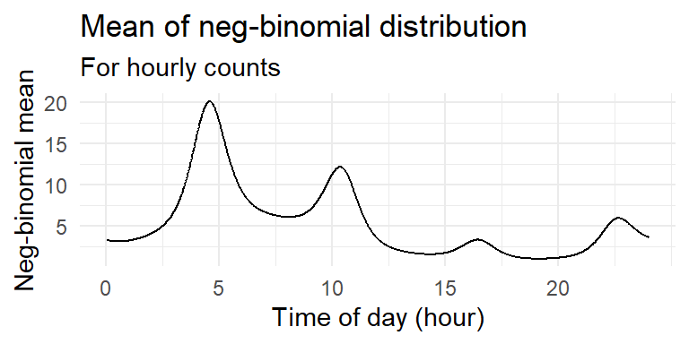

Adaptive Thresholds and Scan Statistics
Motivation
Communications networks have many components that report statistics about their health on a regular basis. Daily, hourly, minutely, or even more frequent.
Network traffic and similar fields of interest often have data that are nonstationary and full of cyclical patterns.
How do we measure extreme counts when that data is being collected so rapidly?
When setting these manually by treating each time period and region separately for each metric:
- Leads to far too many thresholds to be set by hand, and
- Far too many false alarms to be investigated.

“The goal is to detect events with each incoming count, without looking at the past raw counts or being distracted by strong cyclical patterns, trends high background variability, or stretches of missing data.”
References
Lambert, Diane, and Chuanhai Liu. 2006. “Adaptive Thresholds: Monitoring Streams of Network Counts.” Journal of the American Statistical Association 101 (473): 78–88. https://doi.org/10.1198/016214505000000943.
Neil, Joshua, Curtis Hash, Alexander Brugh, Mike Fisk, and Curtis B. Storlie. 2013. “Scan Statistics for the Online Detection of Locally Anomalous Subgraphs.” Technometrics 55 (4): 403–14. https://doi.org/10.1080/00401706.2013.822830.
Rios Insua, David, Roi Naveiro, Víctor Gallego, and Jason Poulos. 2023. “Adversarial Machine Learning: Bayesian Perspectives.” Journal of the American Statistical Association 118 (543): 2195–2206. https://doi.org/10.1080/01621459.2023.2183129.